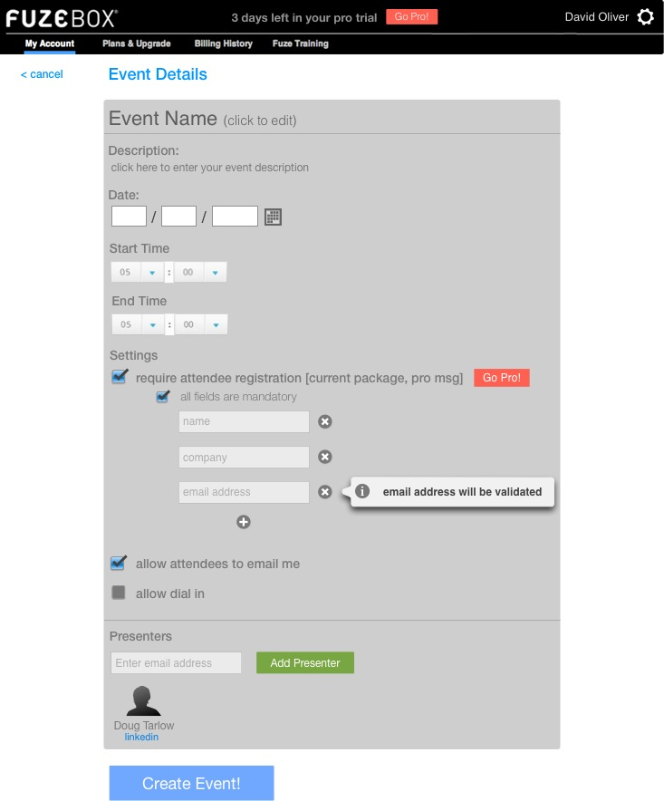

<map name="GraffleExport">
	<area shape=poly coords="270,577,273,577,273,574,270,574,270,571,267,571,267,574,264,574,264,577,267,577,267,580,270,580,270,577" href="create_addfield.html">
	<area shape=circle coords="268,576,10" href="create_addfield.html">
	<area shape=rect coords="283,719,390,743" href="create_dropdown.html">
</map>

